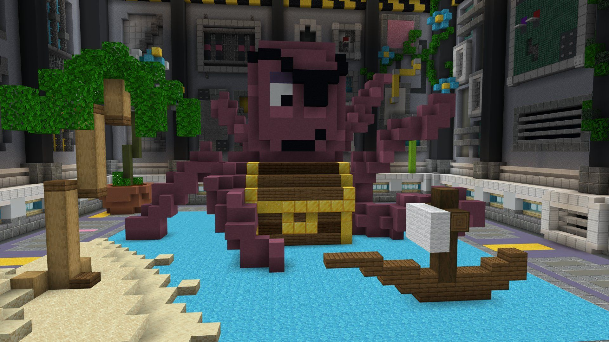

Minigame Build Battle
Um pouco sobre Build Battle:
O jogo consiste em você usar suas habilidades com construção
e sua criatividade, a dinâmica é simples funcionando da seguinte maneira,
após todos os players entrarem no jogo, haverá uma votação para que seja decidido
o que irão construir, seja ele um personagem, mob do próprio Minecraft, entre outros
diversos temas, todos terão apenas 3 minutos para contruir o que foi votado, o jogo
permite que você utilize de sua criatividade, após o tempo se encerrar os próprios
players irão votar entre si para que foi o ganhador. Há 5 níveis de votação o qual
começa por horrível, ruim, ok, bom, muito bom e lendário.

Voltar pra a - Home